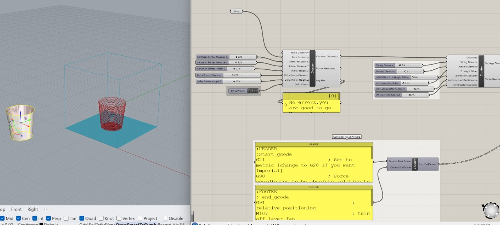

Week 10 & 13: Output devices- input devices
We began by talking about microcontrollers and the different types there are. They can be used on the PCB boards. Some microcontrollers that are common and that we have interacted with are Adafruit feather, Arduino uno, and raspberry pi. We then went over electronics basics as we have before, including concepts of charge, voltage, and Ohm’s law. We then went over output devices including types of motors like stepper motors, servomotors, and DC motors. After the spring holiday break, we discussed the other end, input devices. They are basically sensors that take action on information gathered and convert that into information in another fashion, usually as a number. Systems send information to a sensor, then computer (or anything with a microcontroller), digitalising a physical phenomena. We discussed sensors with the example of arduino, where one state is 0v ground (low) vs. 5v (high). A pull-up resistor can pull up the line to 5v so there is no floating state between. We discussed analog vs. digital, where analog can display more values. Finally, we learned about capacitive sensing, which is really cool because you can essentially make a sensor out of anything with a send and receive pin. One resource for this is sparkfun.com
Key takeaway: Sensors, even if simple, can be powerful devices for translating and interpreting information.
Moment of!: Capacitive sensing seems to make sensors seem like magic and extremely interactive as seen in the “noisy jelly” project we were shown.
Assignment: You remember when you had to DESIGN A PCB for week 6? “design a pcb for an input or an output” now it is time to fabricate it ( finish the design - mill it - solder it) Make the PCB you designed real and make it work ( you have from these week until INPUT WEEK- included)
Week 14: Network and communication
These protocols are used to copy information between two places by sending bits. Networks can be seen as tubes and communication as flow. The network typology is how communication happens, defined by shape. It is important to remember that they are imperfect and will fail at some point or other. Wired communication happens through cables, voltage change signals 0 or 7. It can happen synchronously, a cable line in a consistent way or asynchronously like ringing a bell to listen. With synchronous communication, there is a master-slave relationship with devices where one gives direction and one listens. Wireless communication has different levels of range and penetration to earth’s atmosphere based on frequency. Antennae create a sort of sphere where 3 axes are used to cover a broad range.
Key takeaway: networking and communication in the electronic realm isn’t so different from what you would think of in the social context.
Question: what applications are better to use bluetooth vs. wifi?
Moment of !: The reason why your phone dies faster when you’re far from an antennae is because you are increasing the intensity that you are emitting.
Assignment: Send a message between two microcontrollers (boards). The task could be done by pairs. Communication can be done by cable or wireless.
Week 15: Interfacing and application programming
This subject was useful in learning how we could use coding in a different, more creative way. We learned about tools for prototyping including processing, which is an integrated development environment (IDE) and graphical library, and p5.js which is a web-based version of processing and uses a javascript library to create interfaces. We discussed tools for IoT design of A-frame and JSON. In terms of serial communication between the arduino and a computer to send information bit by bit, you might want to send as little data as possible so that it stores faster. On the other hand, if it is a data based business, you might send as much data as possible. In general, the simplest path creates the least problems. We then went through a p5.js demo where we programmed a moving ball. We could easily adjust color, size, and speed was adjusted using the frame rate. Going through the demo was fun as you could quickly see the output of your coding. Finally, we had a blender with python demo from Victor.
Key takeaway: Interface and application programming can translate data to the user in a more visual, appealing way.
Question: when might python be more useful than javascript and vice-versa?
Moment of !: Tools like p5.js make it easy for designers and people who aren’t super sexperienced in coding to get into creative coding.
Week 16: Wildcard week
Wildcard week was a fun week to get into because it was more open-ended and a chance for us to learn about alternate fabrication techniques. We finally got to learn information from Edu about using the robotic arm that we have been seeing the whole year. He explained to us the functions of the robotic arm, and how it works on a 6-axis manipulator. Because of this, it has a very wide range of motion. It was very helpful for me to understand when compared to a human arm and how it works in a similar way. The main things to ensure when working with the robotic arm are to check for precision and repeatability, and know the printing speed. We then went through kinematic principles. The robotic arm works with planes instead of points. The joints are somewhat limited, so the robot works to move in the most efficient ways to get from point A to B. After the class in the morning, we learned about working with composites. We watched the demonstration of using burlap with epoxy resin to make a skateboard deck. In order to mold the plastic film, the vacuum press was used. The layers were carefully placed one atop the other and then brushed with the resin. We discussed the difference between resin types, and how bio-resins, while made more responsibly in production, have a similar output as non-bio as they are hard to degrade.
Key takeaway: The robotic arm works similarly to a human arm and creating with the robot has similar advantages and uses as a regular 3D printer but on a larger scale.
Question: How can making composites be less wasteful when it comes to the film being used?
Moment of !: The company Mataerial has created a printing material with thermosetting polymers that harden quickly and allow for anti-gravity printing. It can essentially print in the air and watching a video of the process was impressive.
Assignment: Design and produce something with a digital fabrication process (incorporating computer-aided design and manufacturing) not covered in another tasks.
This project was very exciting because I had the chance to continue part of a project from the first intervention which was bioremediating with oyster and mussel shells. Because we were finished with that intervention and had waste shells, we wanted to try 3D printing using them as a material. To be able to print with a material like this, we had to use the paste printer. These machines work in a similar manner to the other 3D printers, but need the material to be inserted and have the particular consistency that is not too thin or thick. In order to make the paste, we followed the process below from raw oyster shells to final printable paste material. The original recipe from materiom we based our off of was to use 1 powder: 4 water (98%) and alginate (2%). While testing with this, we found we needed to add much more water to form a malleable paste and ended up with the final recipe in the diagram.

In order to test the paste consistency, we used a smaller tube with pressure. However, in the end the nozzle was too small (much smaller than the nozzle on the 3D printer) so we were unable to push the material through, and the result was us adding a bit too much water into the mixture. At first, we tried to use the Ender printer which offered more accuracy but with higher risk. Since it was our first time testing with this type of printer, we decided to test with a simple shape. We used a simple cylinder and sliced it in rhino using grasshopper files from FabLab with the pufferfish plugin to turn it into slices. The parameters we used were 0 on the Z axis, 3 for the width of the nozzle opening, 2.5 slicing distance, and 2.5 on infill. While using this machine, we encountered a lot of problems with the pressure and material coming out the sides, in which we ended up breaking the 3D printed part above the nozzle!
We then decided to switch over to the Kossel printer. We downloaded Kossel for grasshopper and Repetier to make the process easier with interacting with the machine. This machine was easy to use and we transferred our file with the new code. The only tricky part was making sure the nozzle was at the right height just above the plate of the printer at a Z value of -19. With this test print, we tried to allow the material to build up into a higher vase. Once we hit a certain height threshold, it started to become very inconsistent and after attempting to fix it a bit with our hands it collapsed. The final products were still really interesting and it was a process in which we learned a lot.